Hi, I’m Brenda – a multidisciplinary problem solver with a passion for technology and teamwork.
I’ve worn many hats throughout my career: Business Analyst, Scrum Master and Developer. I thrive at the intersection of tech, collaboration, and impact, helping teams deliver the right products to users and ensuring that technology makes life better, one solution at a time.
I love exploring how technology improves people’s lives and enables teams to work better together.
I believe in:
✨ Understanding users’ needs to build meaningful products
✨ Using technology as a tool for progress
✨ Empowering teams to work seamlessly together
I’ve worked for leading companies in media 📺, payments 💳, insurance ☂️, and AdTech among others.
In my career, I’ve grown from hands-on roles, building solutions from the ground up, to coaching and empowering teams to deliver great products. I enjoy both: contributing directly and enabling others to excel in their roles, but always close to the action ensuring products meet real user needs, with absolutely marvelous documentation.
My academic journey is a little diverse: from Editorial Publishing 📚Educational Informatics 👩🏫 and Digital Audiovisual Communication 📹. This mix of disciplines fuels my creativity and helps me bring unique perspectives to the teams I collaborate with. I'm a student for life, currently interested in fields like Data and 3D art.
As a Scrum Master, I’m not just a facilitator; I’m a champion of the Agile Manifesto principles. This foundational framework guides my approach to teamwork, encouraging adaptability and collaboration. Here are the four key values that inspire my work:
Individuals and Interactions over Processes and Tools
Remember, individuals and interactions drive success, but that doesn't mean tools are irrelevant.
Working Software over Comprehensive Documentation
So we're not too worried about story points, but documentation still matters—keep the target audience in mind.
Customer Collaboration over Contract Negotiation
So we're not too worried about story points, but documentation still matters—keep the target audience in mind.
Responding to Change over Following a Plan
Collaboration is key, but contracts still serve as a framework for expectations.
I've worked with amazing people from all around the globe! I've had the pleasure of collaborating with amazing teams across more than 20 countries.
Each pin on the map below represents not just a location, but a unique experience filled with laughter and learning.
Even outside work I love exploring how technology improves people’s lives. I also enjoy learning continuously through tech or hobbies.
In my free time, I enjoy spending time outdoors with my dog 🐶, exploring art 🎨 technology 💻, and working on creative projects.
Feel free to reach out if you’d like to chat about projects, collaboration, or just say hi!